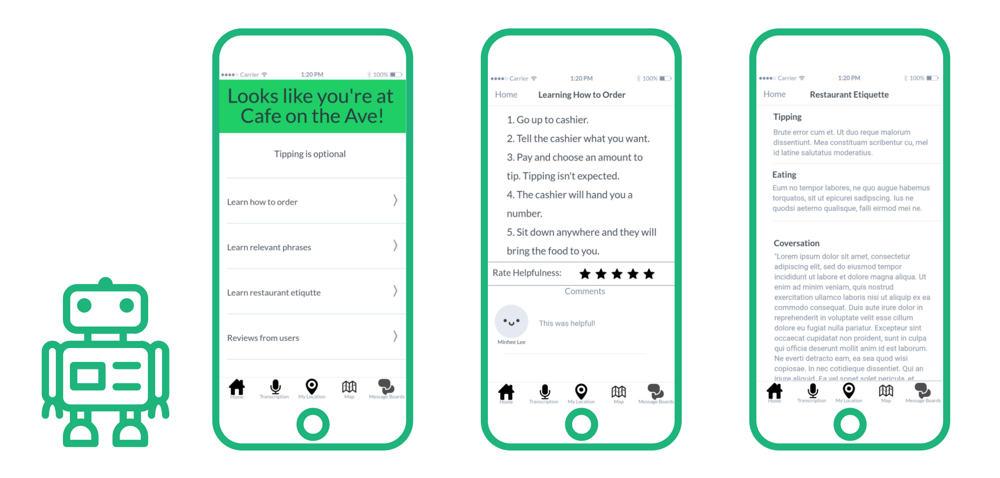
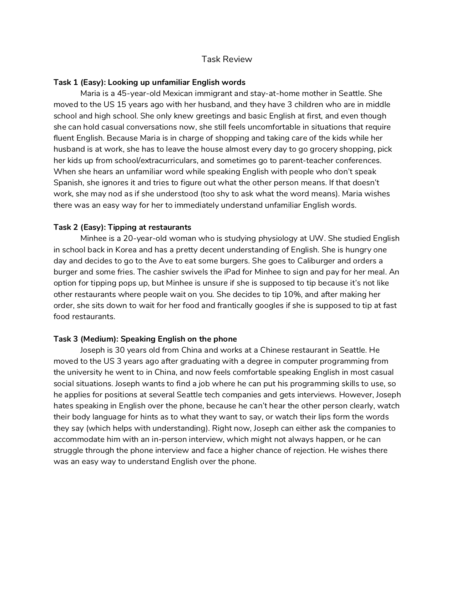
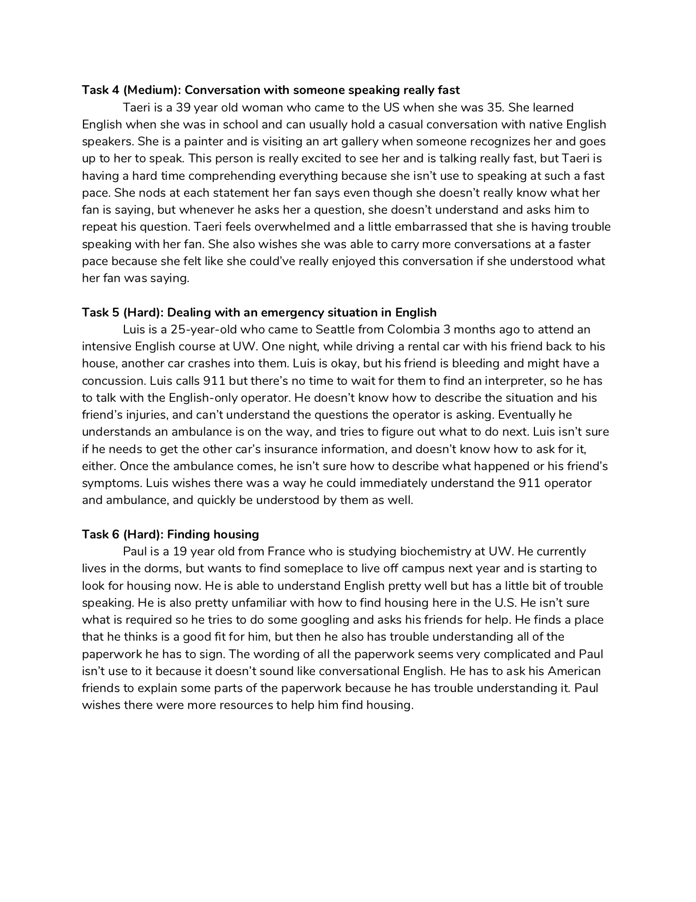
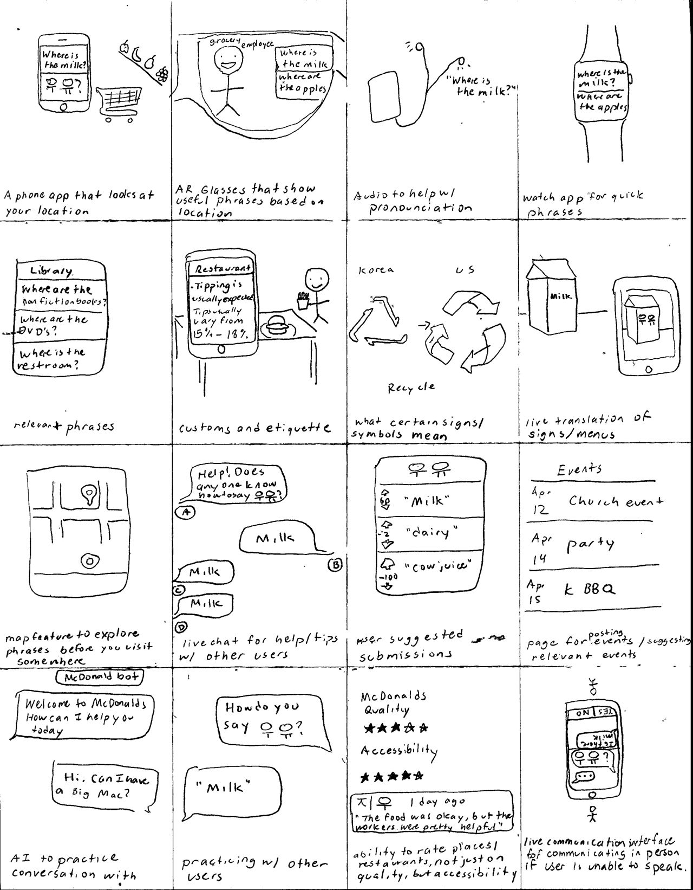
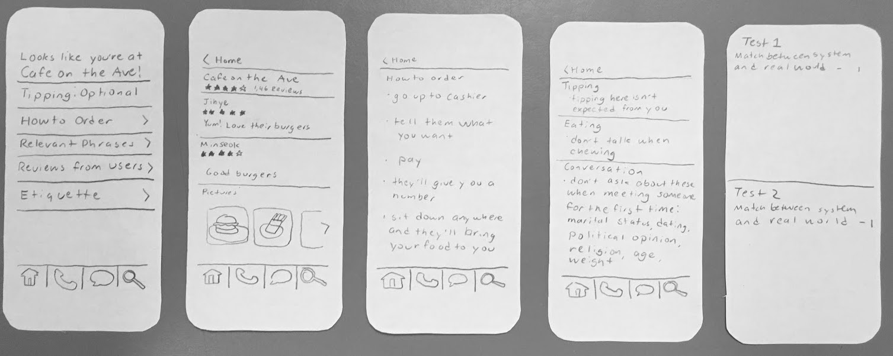

Phrasebot
Duration: 3 Months
Project Type: Class Project
Team Members: Hannah Hertzog & me
My Role: UX Designer & Researcher
Tools: Illustrator, Marvel
Skills: Ideation/Sketching, Interviews, Surveys, Storyboards, Paper Prototypes, Heuristics Evaluation, Usability Testing, Digital Mockup
Phrasebot is a location-based language and cultural assistant designed for immigrants new to the US. It gives users relevant English phrases to say and cultural etiquette tips depending on where they are. It's designed to ease the transition for immigrants to a new country. The app also provides a message board for users to ask for help.
Problem Space
A survey conducted in 2015 found that among immigrants age 5 and older, only about half (51%) consider themselves proficient English speakers. While there are resources for people to learn English, immigrants new to the US don't always have the time to learn, and for those who do, there might be situations where they need to say something in English that they haven't learned yet. Having trouble communicating can make many daily tasks and interactions much more difficult. A study on language barriers on restaurant experiences found that for ESL customers, language barriers can generate negative emotional and cognitive responses, while also preventing ESL customers from taking certain actions like seeking necessary information or complaining about service failures. Language barriers also affect treatment and the quality of healthcare received. Patients with language barriers face difficulty with healthcare access, patient satisfaction and experience, as well as disparities in care between English proficient patients and those facing language barriers. In addition to that, those with language barriers also face increase risks of medication errors and complications (source).
Goal
Because language barriers can make daily tasks and interactions in restaurant, healthcare, or emergency situations much more difficult, we wanted to focus on helping new immigrants during the communication process.
Research
Hannah and I each interviewed three different immigrants who were fairly new to the US. Through interviews, we identified many different pain points when communicating in English.
Pain Points
- knowing the right phrases to say
- comprehending English at different talking speeds
- communicating over the phone
- understanding tipping and other cultural customs
- seeking medical help
- getting advice from others immigrants about certain situations
Task Development
Using our research, we came up with 6 different tasks ranging from easy to hard that we discovered were common from our user research. We also created personas based on our interview participants to help demonstrate our tasks.
 Design Sketches & Ideas
Here are some of my sketches for potential solutions during our ideation phase:
We came up with different solutions that would address the 6 tasks, but in the end, we decided on a smartphone app for a context based language assistant. It would provide relevant phrases and etiquette tips based on the user's location. It would also allow users to ask each other for help. We also included a feature to allow users to rate restaurants and businesses based on their accessibility.
Paper Prototype
We made a paper prototype that we conducted our usability testing with. We focused on creating features that would aid our users in completing our 6 tasks.
Task 1: Looking up unfamiliar English words
To allow our users to look up words, we included a search tab for words and phrases. It also lets the user search through our etiquette tips.
Task 2: Tipping at restaurants
To help our users with tipping and other American customs, I designed our home page that brings up relevant etiquette information based on the users location. At a restaurant, it would provide information on how to tip and other dining etiquette.
Task 3: Speaking in English on the phone
To make phone calls easier for our users, I designed a live transcription feature that runs during phone calls and transcribes what's being said. Our research participants indicated that they sometimes had difficultly understanding people during telephone calls, especially because it relies completely on verbal communication, unlike in-person conversations, where people can also communicate with body language and facial expressions. To address privacy concerns, our transcription feature would never store anything it transcribes.
Task 4: Conversation with someone speaking really fast
Our live transcription feature would also help with this. Users would be able to see a transcription of what was said if they didn't catch it the first time.
Task 5: Dealing with an emergency situation in English
To help with emergency situations, our users would be able to search for tips with our search tab. We'd also include a resource on what to say in certain situations. The live transcriptions would also be helpful when making 911 calls.
Task 6: Finding housing
To help with housing and other similar issues, Hannah designed our message board, where our users could ask others for help with finding and applying for housing. They'd also be able to ask help about any other situations.
Usability Testing
We conducting usability tests on to find issues and difficulties our participants had with our initial paper prototype. We told participants to complete 3 different tasks and had them explain difficulties they had with completing them.
Key Insights
- The tab icons weren't clear on what they represented. We also needed to include labels underneath.
- Some participants wanted to preview contextual information for different locations and situations.
- Participants also thought it would be helpful if other users could comment on or add to our informational pages.
Digital Prototype
To address the issues we discovered from our usability testing, we labeled our tabs and added a map tab, where users could preview the contextual information at certain locations to prepare themselves. It also allows users to leave reviews and helpful information for other users about accessibility at those locations. We also allowed users to make comments on our information pages. For our digital prototype, we designed some alternative pages in Korean as an example of what our product would look like in different languages.
Reflection
Through our user research and usability testing, we learned many things that we wouldn't have figured out on our own. We realized that there was also a need for customs and etiquette information for immigrants new to the US. Things like figuring out how to tip or how to apply for housing were difficult because of cultural differences. Through our usability testing, we made improvements to our interface to make it more intuitive and easier to navigate. If we had more time, I'd work on making the interface more visually appealing and conducting more usability testing to make our solution even more effective.